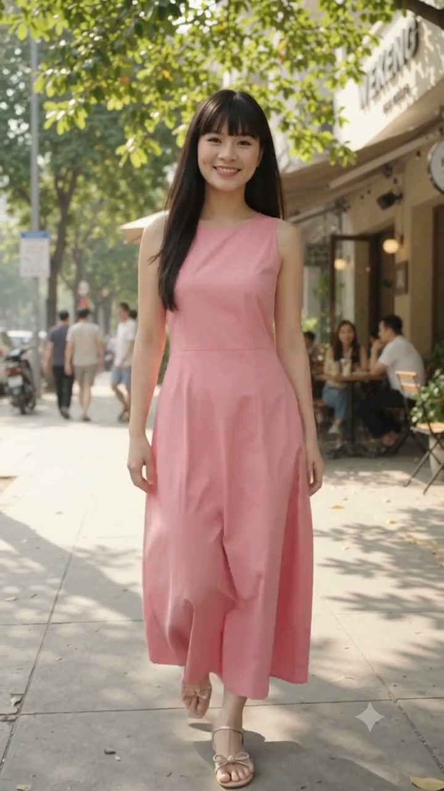
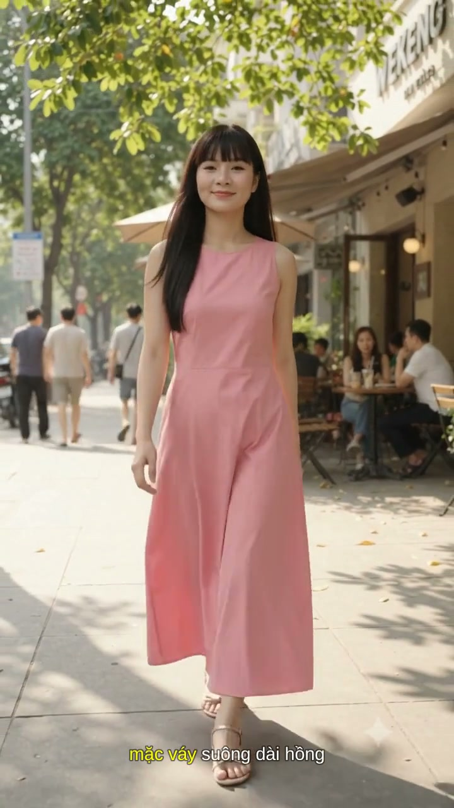
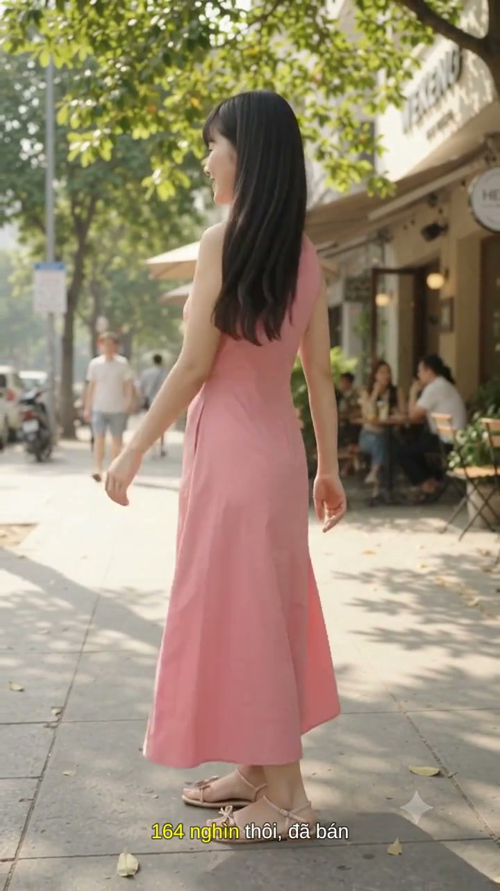
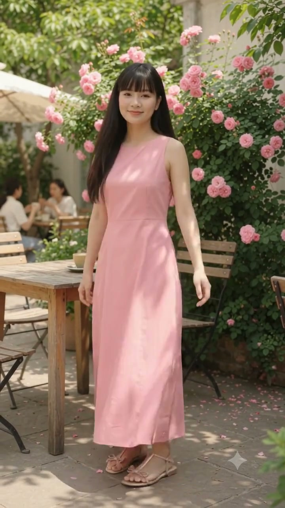

Váy suông dài không tay hồng dâu Chicky: đi cà phê cuối tuần vẫn gọn, chỉ 164 nghìn

Đi cà phê cuối tuần, Lisa mặc váy suông dài hồng dâu mà nhìn vẫn gọn, vẫn xinh. Váy cotton mát, 164 nghìn thôi, đã bán hơn 1 nghìn cái rồi. Bạn chấm bộ này mấy điểm?
Đọc trước khi mua: bài viết này là gợi ý phối đồ lấy cảm hứng từ các mẫu đang bán chạy trên Shopee. Lisa là nhân vật AI, nên bài viết không phải bài đánh giá sản phẩm Lisa đã mặc thật hay đã dùng thử. Giá, chất liệu và size cần kiểm tra lại trên trang bán trước khi mua.
· Váy nữ dáng suông dài không tay tone hồng dâu, shop Chicky — Flash Sale 164.000đ (niêm yết 280.000đ), 4,8 sao/247 đánh giá, đã bán 1k+, freesize 40–55kg.
Một chiếc váy suông đơn giản mà đủ xinh — cổ tròn, không tay, dáng chữ A dài tới mắt cá:

Đi bộ ngoài quán — váy suông chữ A, dài tới mắt cá

Xoay nhẹ — dáng suông không ôm người, vẫn gọn

Cười nhìn camera — hồng dâu sáng da dưới nắng
Vì sao váy này hợp đi cà phê cuối tuần?
Dáng suông chữ A gọn người: váy suông qua eo, xòe nhẹ xuống mắt cá — không ôm sát nên ngồi café cả buổi vẫn thoải mái, đứng lên cũng không nhăn.
Cotton/thô Hàn mát nhẹ: vải cotton pha thô Hàn trơn, không xếp ly — mặc ngoài trời nắng nhẹ vẫn thoáng, không bí.
Màu hồng dâu sáng da: hồng dâu dịu, không chói — mặc đi café buổi sáng, chụp ảnh dưới nắng hay bên tường hoa đều sáng da.
Không nút, không khóa, không belt: váy liền một mảnh, cổ tròn không nút — mặc nhanh, không lo cộm hay lệch, chỉ cần xỏ sandal là xong.
Cách chọn váy suông dài cho dáng nhỏ
Maxi tới mắt cá khoe sandal: váy dài tới mắt cá vừa đủ khoe đôi sandal quai mảnh — dáng nhỏ mặc váy maxi mà để lộ cổ chân thì chân nhìn dài ra, không bị nuốt người.
Cổ tròn + không tay thoáng vai: cổ tròn và tay trần giúp phần trên nhẹ nhàng, vai nhìn thanh thoát — dáng nhỏ mặc không tay với váy suông sẽ gọn hơn hẳn tay bồng hay tay dài rộng.
Hồng dâu thay vì hồng đậm: hồng dâu là hồng pha chút đất, dịu hơn hồng cánh sen — da sáng lên mà không bị chói, đi làm hay đi chơi đều mặc được.
Mẹo phối váy này trong 3 phút
Đi cà phê: mặc đúng váy này với sandal quai mảnh đế bệt, tóc xõa thẳng tự nhiên — ngồi bên bàn café, tường hoa hồng phía sau là đủ xinh, không cần thêm phụ kiện.
Dạo phố cuối tuần: giữ nguyên váy, thêm túi tote vải nhỏ và kính mát — váy suông dài đi bộ thoải mái, không vướng chân.
Chụp ảnh ngoài trời: đứng dưới tán cây hoặc bên tường hoa, nắng xuyên lá — váy hồng dâu dưới nắng lên ảnh rất mềm, không cần chỉnh màu nhiều.